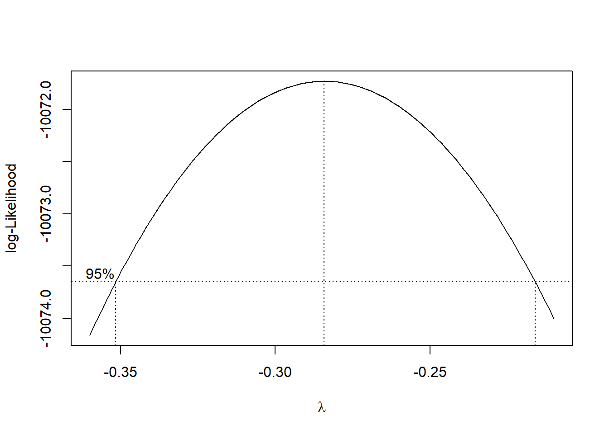
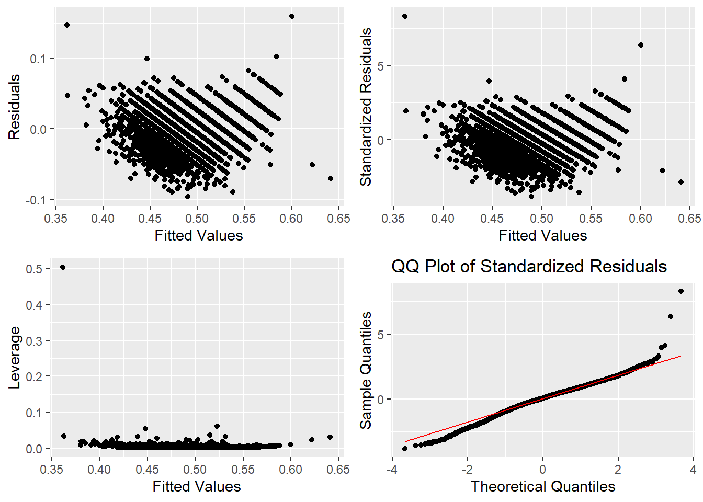
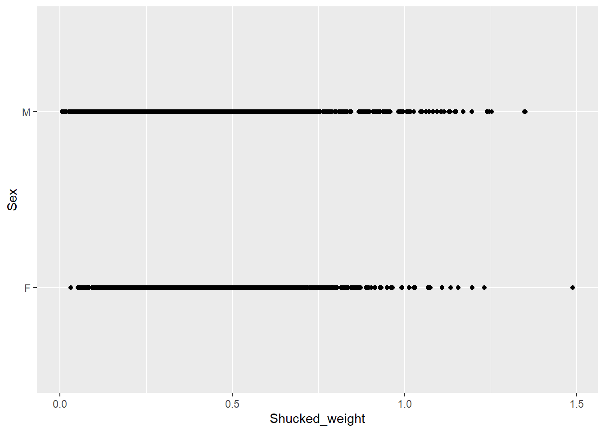

The following object is masked from 'package:plotly':
select
library(car)
Warning: package 'car' was built under R version 4.3.3
Loading required package: carData
Warning: package 'carData' was built under R version 4.3.3
library(gridExtra)library(pROC)
Warning: package 'pROC' was built under R version 4.3.3
Type 'citation("pROC")' for a citation.
Attaching package: 'pROC'
The following objects are masked from 'package:stats':
cov, smooth, var
#Functions to quickly make diagnostics#Creates basic scatter plotsgg_basic <-function(data, x, y) { plot <-ggplot(data = data, aes(x = {{x}}, y = {{y}})) +geom_point()return(plot)}#Creates a 2x2 grid of basic diagnostic plots of a lm objectlm_diag <-function(lm_model) { p1 <-gg_basic(lm_model$model, fitted(lm_model), residuals(lm_model)) +labs(x="Fitted Values", y="Residuals") p2 <-gg_basic(lm_model$model, fitted(lm_model), rstandard(lm_model)) +labs(x="Fitted Values", y="Standardized Residuals") p3 <-gg_basic(lm_model$model, fitted(lm_model), hatvalues(lm_model)) +labs(x="Fitted Values", y="Leverage")# Create QQ plot of standardized residuals p4 <-ggplot(lm_model$model, aes(sample =rstandard(lm_model))) +stat_qq() +stat_qq_line(colour="red") +labs(x ="Theoretical Quantiles", y="Sample Quantiles") +ggtitle("QQ Plot of Standardized Residuals")# Arrange all plots into a gridreturn(grid.arrange(p1, p2, p3, p4, ncol=2, nrow=2))}
1a) Create a variable age by adding 1.5 to rings and use age as the response varaible and all other variables (not including rings for predictors (additively), create a scatterplot matrix of the data and comment on the relationship among the varaibles
snails <-read.csv("seasnails.csv")#Create new variable agesnails$age <- snails$Rings +1.5head(snails)
None of the predictors appear to have a linear relationship with the response. The argument could be made that Length and Diameter have a roughly linear relationship, but the apparent fanning out of points leads me to believe these variables will need transformations as well to produce a valid MLR model.
boxcox(lm_full, lambda=seq(-0.36, -0.2, by =0.05))

summary(powerTransform(lm_full))
bcPower Transformation to Normality
Est Power Rounded Pwr Wald Lwr Bnd Wald Upr Bnd
Y1 -0.2841 -0.33 -0.3519 -0.2163
Likelihood ratio test that transformation parameter is equal to 0
(log transformation)
LRT df pval
LR test, lambda = (0) 64.97565 1 7.7716e-16
Likelihood ratio test that no transformation is needed
LRT df pval
LR test, lambda = (1) 1192.79 1 < 2.22e-16
The Box-Cox analysis indicates we are 95% confident t hat the value of \(\lambda\) lies between \(-0.36\) and \(-0.2\). For the sake of intuition I will take lambda to be -0.3 and so the transformation will be \(Y^{-0.3}=age^{-0.3}=\frac{1}{age^{0.3}}\)
1c) I will use the step() function which uses Backwards Stepwise Selection to compare models according to their number of predictors and find the model with the lowest AIC criteria.
#Plots of Residuals, Leverage, and QQlm_diag(lm_trimmed)

The residual plots seem to be skewed left, and exhibit a nonlinear pattern, calling into question the assumption of constant variance. Leverage seems fine, there are no high leverage points. Normality could be better, especially in the left side, but it does not obviously seem like a problem.
Warning: Computation failed in `stat_smooth()`
Caused by error:
! y values must be 0 <= y <= 1

For the predictor Shucked_weight, the sign tells me that as the shucked_weight increases the log odds of a snail being male will increase (assuming the order in the graph above matches 0 to 1). Conversely, the other predictors since they have negative signs I predict an increase in their values will lead to an increase in the log odds of a snail being female.
The ROC curve is not skewed much to the upper left, meaning our model is not much better at classifying than simply guessing. This is further supported by the AUC which is very close to 0.5 (0.5816). So our model is slightly better than just guessing, but not by much.